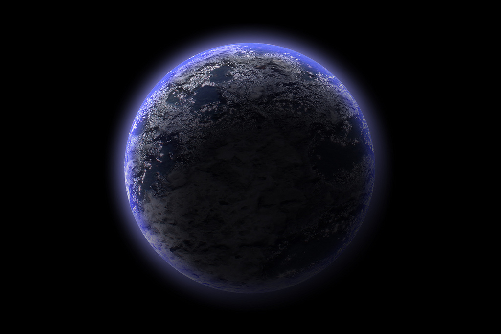

| Cette page est actuellement en cours de construction. Son auteur travaille à l'améliorer. |
Sommaire
AMNEOS
| Amneos | |
|---|---|
 | |
| Cycle annuel | 164 ans 3 mois 6 heure ,standards |
| Cycle journalier | 53 heure 45 ,standards |
| Soleil(s) | 2 |
| Lune | Aucune |
| Espèces répertoriées ("Intelligente") | Humain 31%, Amneosien 11%, Atien SR 22%, Atien SB 34%, Autre 2% |
| Population | 12 milliards d'être dit "Intelligent" |
| Langue officielle | Amneosien et Atien Espertanies |
| Gouvernements | Sénat Amneosien ; Ministre Atien ;Grand conseil de la garde des mondes |
| Sites remarquables | Palace des Kosrae,Baie de Oualan,Antiedrome principal,Portail Amneosien |
| Faunes et flores | Très grandes |
| Température moyenne en surface | +19° |
| Surface émergée | 38% |
| Volume | 1 594 821 540 000 km |
| Gravité à la surface | 989.495 cm/s |
| Masse | 8.10*25 kg |
| Masse de l'atmosphère | 5,14.10*15 tonnes |
| Densité moyenne | 6,72 |
| Calendrier | Standard et Atien |
| Distance moyenne aux soleils | Distance moyenne au Soleil R : 199 597 890 km ; |
| Distance moyenne aux soleils | Distance moyenne au Soleil M : 590 930 124 124 km |
| Climat principal | Tempérée et Aquatique |

Les deux soleils d'Amneos :
- "Rêägndït", "Atiennt" ou "Sineins" (R) :
Il s'agit du principale et plus gros Soleil qui occupe aussi une place centrale du système solaire .
- "Binndriel", "Yht" et "hnillr" (B) :
C'est une ancienne planète ,
Mais pour des raisons complexes ,il s'est transformé en Boule de gaz .
On le voit bleu ou Vert suivant la distance de Atiennt et la disposition de ses pôles .
Geographie
Continent Landetre

Le plus grands des continents Amneosiens . Malgré le désert au Nord-Ouest ,c'est le continent le plus peuplées de la planète . Il y a trés peu de chaines de montagnes ,et par contre beaucoup de lac notamment vers la Golfe d'Yrtio au Sud . Sur l'image on peu observés le continent en fausse couleur ,d'habitude les nuages de gaz masquent toute la grande mer de L'Est ainsi que le pole Sud (Qui d'ailleurs est masqué par des Aurores Boréales suites a un très fort dérèglement du champs magnétiques ).
Continent Zenatre
Continent Hni llien
Crepuscule

Le passage suivant est une copie du message envoyé à l'assemblée par le commandant Kitziliik ("Beneradane") .
Kitzillik
Musique : https://www.youtube.com/watch?v=t0oS3Y4ccVE
Système Reifhalfa.
Progressivement, le système avait sombré dans le chaos le plus total. Un à un, les mondes du domaine colonial d'Eli disparaissaient dans de grands cris de douleurs retransmis sur d'innombrables canaux de communication, puis s'ensuivait un silence morbide. Il ne restait ensuite plus que les suppliques des rares survivants ayant eu la chance de trouver un vaisseau spatial prêt à appareiller avant que les colonies ne soient submergées.
Neymee avait investi massivement dans des fortifications pour protéger ses possessions, alors même que les populations de colons étaient largement insuffisantes, au point de durement affecter le processus normal du développement de ces si jeunes colonies. Mais rien n'y faisait, en l'espace de seulement deux cycles, les six mondes précédemment colonisés par Neymee avaient été balayés comme feuille au vent.
Mais la tragédie des centaines de milliers de colons qui avaient eu le malheur de se retrouver impliqués dans l'expansionnisme d'Eli n'allait bientôt ne devenir plus qu'une vulgaire note de bas de page dans l'Histoire du système Reifhalfa.
Depuis un autre monde majeur du système Reifhalfa observaient silencieusement et avec inquiétude les habitants d'Amneos (https://histoire.apocalypsis.org/index.php/Amneos) . Le commandant Amdiir et le Sénat Amneosien avaient commis une extrêmement grave erreur de jugement en s'alliant avec la maîtresse de Neymee et ne pouvait plus que contempler avec horreur l'éradication de leurs voisins.
Alors que n'avait même pas eu le temps de se finir le cycle qui avait vu la guerre tourner au massacre unilatéral des forces de Neymee, un nouvel événement allait mettre fin définitivement à toute forme d'espoir pour les populations Humaines du système.
Alors que Sineins et Binndriel, les deux étoiles du système se levaient à peine sur le continent principal d'Amneos, les premières secousses sismiques se firent sentir sous les principales métropoles du monde. La panique généralisée s'empara de la population, fuyant massivement dans les campagnes ou se précipitant dans les astroports dans la vaine espérance de trouver une place vers l'un des rares mondes voisins épargnés.
Moins d'une dizaine de minutes après le début des tremblements souterrains, le sol finissait par se dérober en des milliers de lieux sous les villes, d'où des galeries crachaient des flots ininterrompus des fameux Tikiliikiks, jusqu'à présent si difficiles à observer.
En tout point similaires aux fourmis issues de la Terre et ayant été introduites sur un nombre incalculables de mondes au travers des galaxies, les Tikiliikik avaient évolués d'une façon si spectaculaire qu'elles atteignaient couramment, des mandibules à l’aiguillon, les deux mètres et demi de longueur.
Promptement, toutes les rues étaient envahies d'une masse grouillante de Tikiliikiks, déchiquetant et dévorant tout être ayant eu le malheur de n'avoir pu se réfugier dans les plus bâtiments. Les uns après les autres, les postes fortifiés tombaient, lourdement dotés en armes antiaériennes mais n'ayant point été conçus pour une attaque aussi inconcevable.
Lorsque les deux soleils se couchèrent enfin sur le continent de Landetre, les dernières poches de résistance armée ayant survécu à l'interminable journée se résumaient essentiellement au gigantesque Palace des Kosrae et à l'Antiedrome principal du monde. Les rares unités militaires encore opérationnelles qui y avaient trouvé refuge pouvaient compter sur ces formidables forteresses pour y livrer une défense acharnée, mais le sort du monde était déjà fixé.